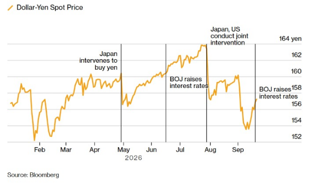

9/26(토) · 기준 2026-09-25 22:00 ~ 2026-09-26 06:00
엑셀 다운로드
"이미지 다운로드"를 누르거나, 이미지를 길게 눌러 저장한 뒤 카톡으로 보내세요.

![[연합뉴스] 2026 아이치·나고야 아시안게임 메달리스트(25일)](images/graphics/연합뉴스_01.jpg)
![[연합뉴스] 2026 아이치·나고야 아시안게임 국가별 메달 현황(25일)](images/graphics/연합뉴스_02.jpg)
![[연합뉴스] 러시아 총선 결과](images/graphics/연합뉴스_03.jpg)
![[뉴스1] [그래픽] 2026 아이치·나고야 아시안게임 기계체조 여자 평균대 금메달-황서현](images/graphics/뉴스1_04.jpg)
![[뉴스1] [그래픽] 2026 아이치·나고야 아시안게임 카누 스프린트 2인승 500m 금메달-김효빈·조광희](images/graphics/뉴스1_05.jpg)


![美금리 악재에 버티기…숏청산에 8.4만달러 회복[코인 모닝콜]](images/article_07.png)
![미-이란 협상 기대감에 2%대 하락…WTI, 주간 8% 급락[국제유가]](images/article_08.png)


![추석 전국 흐리고 곳곳 비…한가위 보름달 보기 어려워[오늘날씨]](images/article_13.png)


![美 ‘1호 헬기’ 올라탄 시진핑...대만·이란· AI는 ‘평행선’[이태규의 워싱턴 플레이북]](images/article_18.png)